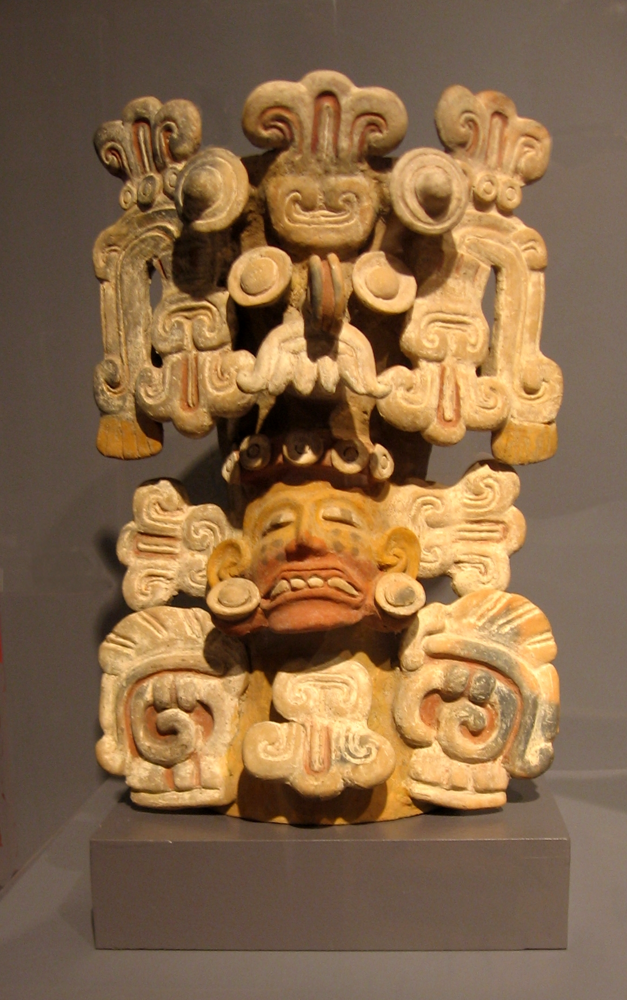
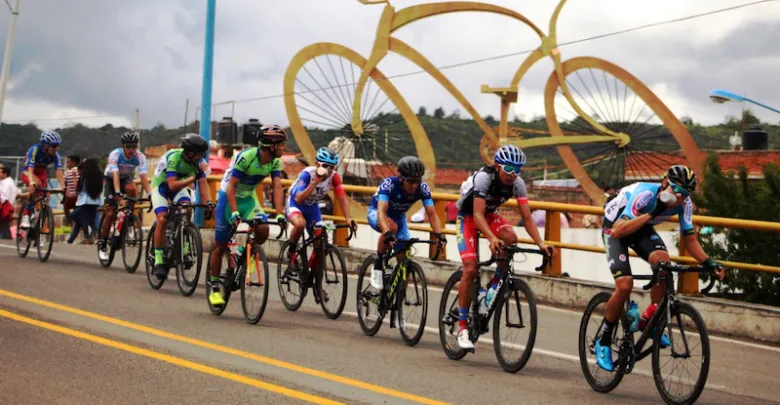

History of Zacapu
Zacapu is a municipality in the Mexican state of Michoacán de Ocampo .
It is located 61 km from Pátzcuaro and 80 km from Morelia.
The name Zacapu comes from the Chichimeca expression that is interpreted
as "stone" or "stony place". Cecilio Robelo , in his work
Tarasco-Hispano-Nahoa Toponymy , indicates that it comes from Tarascan
and that the expression Tzacapu haracucuaro translates as "Quarry where
they take out stone". Other authors point to the spelling Tzácapu for
the Purépecha word that means "stone". This is because Zacapu is
sorrounded by extinct vulcanos.

Local Food
The most famous local food in Zacapu alongside with the municipality of
Quiroga, Michoacan are the famous Carnitas de Puerco. This dish is an
exquisite mixure of pork meat. An inexpensive, heavily marbled cut of
pork, such as boneless Boston butt, pork shoulder or picnic ham, is
braised or simmered for several hours with seasonings and lard until it
is so tender that is can be shredded. At the end of cooking, the meat is
roasted to make it crisp. Carnitas is a dish served on its own with
salsa and sides, and carnitas is also used as a filling for tacos,
burritos, or enchiladas.

Local Events and Highlights
Zacapu is full of different activities and events for tourists and
visitors to enjoy, you can come and walk around the Zarcita park while
you delight taste with the sweet Pasta icecream. Or you can awake your
most adventurer spirit by visiting one of the many archeological spots
Pasta Icecream Festival
You can visit Zacapu on April to assist the Pasta Icecream Festival, a
special day where many different people from around Zacapu and other
municipalities come to delight the population with special mixtures and
flavors of icecream. This is a celebration that starts in the morning
with different Mexican food you can taste and ends by the noon where the
locals celebrate by lightining up a traditional fireworks outside Santa
Ana's Church.
Zacapu Cycling Circuit
Zacapu also is the host in one of the most important cycling events in
Michoacan, the Amando Martínez career where athletes from around the
country compete to win the circuit. This event is organized and
celebrated on September 15th, which is also the eve of one of the most
important days for the Mexican country, the independence anniversary.
